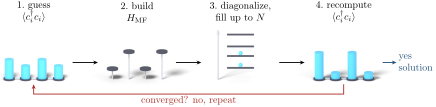
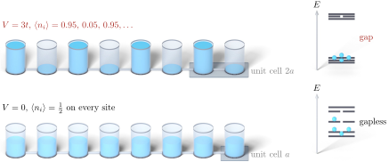

Advanced Quantum Materials 2027 · All lectures · Lecture notes
Session 1. Second Quantization, Mean-Field, and Spontaneous Symmetry Breaking
1.13 Worked example 1, the charge density wave
Let us take the simplest interacting case, which is a spinless one-dimensional chain with nearest-neighbor hopping \(t\) and a nearest-neighbor Coulomb repulsion \(V\),
\[H = -t\sum_n \left(c_n^\dagger c_{n+1} + \text{h.c.}\right) + V\sum_n c_n^\dagger c_n\, c_{n+1}^\dagger c_{n+1}. \tag{1.6}\]
In this form, every site is equivalent because of translational symmetry. The quartic term is the difficult one, so mean-field theory factorizes it. We replace one pair of operators by its expectation value, and we keep the rest as it is. This is an uncontrolled approximation, and a more rigorous way exists with a path integral and a saddle-point approximation, but it is the practical method that we will use in the whole course. As a result, the interaction term becomes a single-particle onsite energy that depends on the position. Nothing forces the expectation value \(\langle c_n^\dagger c_n\rangle\) to be the same at every site, so even if the bare Hamiltonian (1.6) is translationally symmetric, the mean-field solution does not have to be. This difference, a symmetric Hamiltonian with an asymmetric ground state, is the charge density wave, and it is the same difference that Section 1.11 described in the abstract.
More rigorously, mean-field theory is a variational search over single-particle product states, where we minimize \(\langle H\rangle\) with respect to the bilinear expectation values \(\langle c_i^\dagger c_j\rangle\) that define the mean-field Hamiltonian. Since the Hamiltonian depends on these expectation values and the expectation values depend on the Hamiltonian, we solve the problem self-consistently. We guess a Hamiltonian, we compute the expectation values that it gives, we build a new Hamiltonian from them, and we repeat until the process converges. Figure 1.4 shows this loop, and every worked example below and every notebook box in this chapter uses it.

Numerically, at \(V=0\) the spectrum is gapless, which is a metal. When \(V\) grows, a gap opens in the single-particle spectrum and becomes larger, and at the same time the charge imbalance between even and odd sites grows from zero toward its maximal value, where it is fully polarized. Figure 1.5 shows the two limits in real space, together with the spectrum of each one.

Notebook check-in: session1.ipynb, “Symmetry breaking in the spinless fermionic chain” (Core), and “Gap opening in a spinless interacting model” (Challenge)
Run the self-consistency loop of Section 1.13 yourself. Start from an unbiased guess, iterate, and look at how the charge imbalance on each site grows with \(V\), together with the opening of the gap in the spectrum and in the density of states.